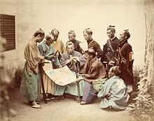
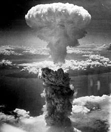

Современная Япония
(1868 год - с 1989 года)

В период Бакумацу Япония подписала несколько неравноправных договоров с западными державами, что привело её к экономическому и политическому кризису. В 1868 году началась гражданская война Босин, результатом которой в 1869 году стали упразднение сёгуната и создание централизованного государства под управлением императора - реставрация Мэйдзи. Взяв за основу западные политическую, судебную и военные системы, Кабинет министров Японии создал Тайный совет, подготовил к принятию Конституцию Мэйдзи и собрал парламент. Реставрация Мэйдзи превратила Японскую империю в индустриальную мировую державу. После победы в японо-китайской (1894-1895) и русско-японской (1904-1905) войнах Япония обеспечила себе господство на Японском и Жёлтом морях и присоединила к себе Корею, Тайвань и южный Сахалин.
{kind=link}
В начале XX века непродолжительный демократический период Тайсё сменился ростом милитаризма и экспансионизма. Япония приняла участие в Первой мировой войне на стороне Антанты, расширив своё политическое влияние и территорию. В 1931 году, продолжая свою политику экспансионизма, Япония заняла Маньчжурию и создала марионеточное государство Маньчжоу-Го. После доклада Литтона в 1933 году Лига Наций осудила её действия и Япония демонстративно покинула Лигу. В 1936 году Япония подписала Антикоминтерновский пакт с нацистской Германией, а в 1941 году присоединилась к странам «Оси». Тогда же Япония подписала Пакт о нейтралитете между СССР и Японией, обязавшись уважать территориальную целостность и неприкосновенность Монгольской народной республики и Маньчжоу-Го.
В 1937 году Япония вторгается и в другие части Китая, начиная вторую японо-китайскую войну (1937-1945), после чего США накладывают на неё нефтяное эмбарго. 7 декабря 1941 года Япония напала на Пёрл-Харбор и объявила войну США и Великобритании. Это приводит к участию США во Второй мировой войне. Японская империя завоевала Гонконг,Филиппины и Маллакку, но в 1942 году поражение в Коралловом море лишило её преимущества на море. После атомных бомбардировок Хиросимы и Нагасаки 6 и 9 августа 1945 года авиацией США, а также после присоединения СССР к военным действиям против Японии, Япония подписала 2 сентября 1945 года Акт о безоговорочной капитуляции.
{kind=link}
В 1947 году Япония приняла новую пацифистскую конституцию, в которой делается акцент на либеральную демократию.Оккупация Японии союзными войсками закончилась с принятием Сан-Францисского мирного договора, который вступил в силу в 1952 году, а в 1956 году Япония вступила в ООН. Позже Япония добилась рекордного экономического роста, который продолжался четыре десятилетия и составлял в среднем 10 % ежегодно.
Длительный рост породил в конце 80-х годов чрезмерно оптимистическое отношение инвесторов к японской экономике, что привело к возникновению экономических пузырей на фондовом рынке и рынке недвижимости. В 1991 году экономический рост сменился кризисом, из которого страна сумела выбраться только в 2000 году.
История культуры Японии
Дзёмон (10 тыс. лет до н. э. - 300 до н. э.) - первые образцы керамики, украшения и женские фигурки догу
Яёй (300 до н. э. - 300 н. э.) - переход к земледелию, поливное рисоводство, изделия из бронзы и железа, колокола дотаку
Кофун (IV век н. э. - VI век н. э.) - распространение культуры курганов, скульптуры ханива, зарождение древнего синтоизма и связанных с ним культов
Асука (593-710) - заимствование образцов китайской культуры, реформы Тайка, создание кодексов законов
Нара (710-794) - проникновение в страну конфуцианства, даосизма и буддизма, создание литературных произведений «Кодзики», «Нихон Сёки», «Манъёсю», «Кайфусо»
Хэйан (794-1185) - начало использования слоговых азбук хираганы и катаканы, строительство святилища Ицукусима, создание «Повести о Гэндзи», возникновение стиля в живописи ямато
Камакура (1185-1333) - формирование самурайского сословия
Муромати (1333-1568) - возникновение театра но
Сэнгоку Дзидай (1467-1568) - проникновение в страну христианства
Эдо (1600-1868) - установление диктатуры Токугава, политика сакоку, подавление христианства и падение сёгуната, зарождение театра кабуки и стиля укиё-э
Мэйдзи (1868-1912) - конец периода самоизоляции, начало капиталистического пути развития, зарождение японского кинематографа
Периодизация
{kind=link}
{kind=link}
{kind=link}
{kind=link}
{kind=link}
{kind=link}